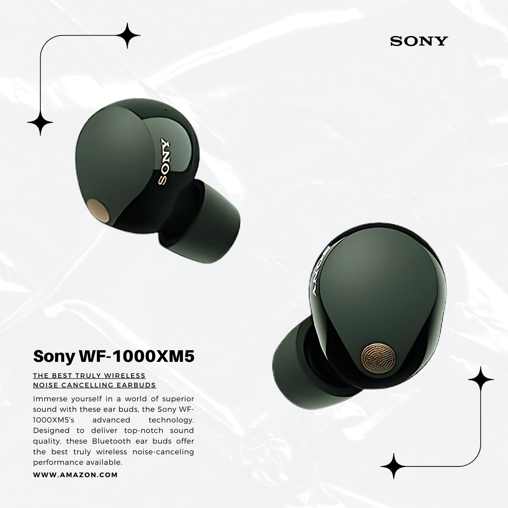

Sony WF-1000XM5
The gold standard for noise cancellation. Experience crystal-clear sound with specialized driver units and industry-leading AI processing.
Buy Now★★★★★
(4.1 / 5.0 - 2600+ Reviews)
Key Specifications
- Driver 8.4mm Dynamic Driver X
- Battery 8 Hours (ANC On)
- Connectivity Bluetooth 5.3
- Upscaling DSEE Extreme
- Weather Resistance IPX4
Detailed Insight
With the combination of the HD Noise Cancelling Processor QN2e and the V2 processor, the WF-1000XM5 offers unparalleled audio clarity and noise isolation.
Whether you are on a noisy flight or in a crowded office, these earbuds ensure you remain immersed in your music with professional-grade sound quality.